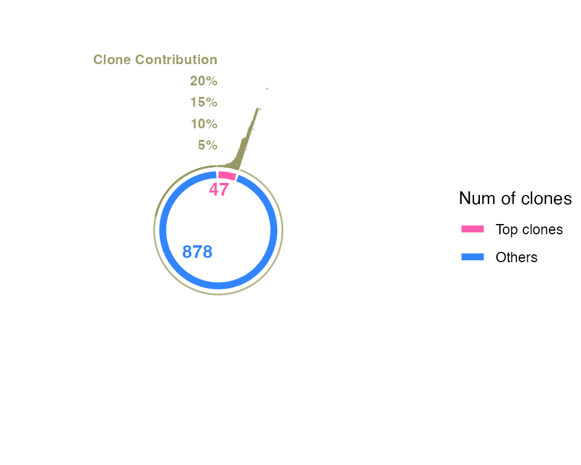
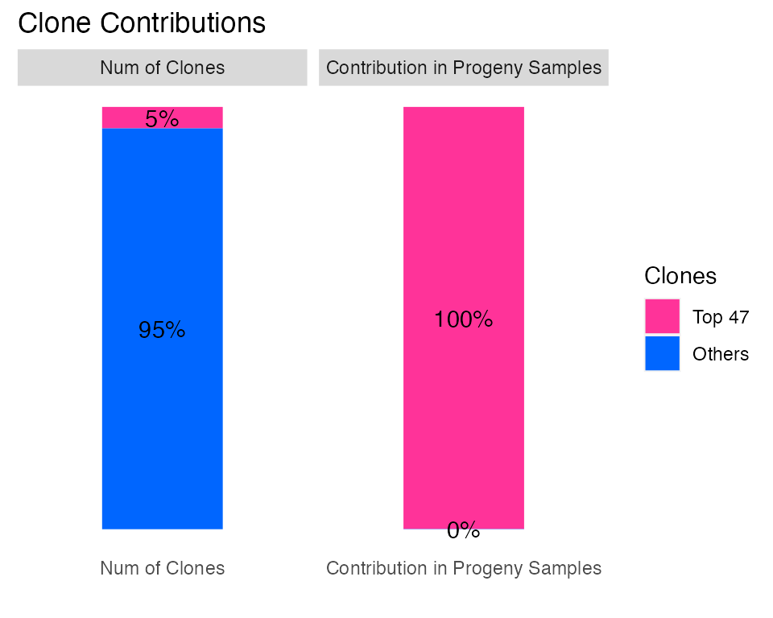
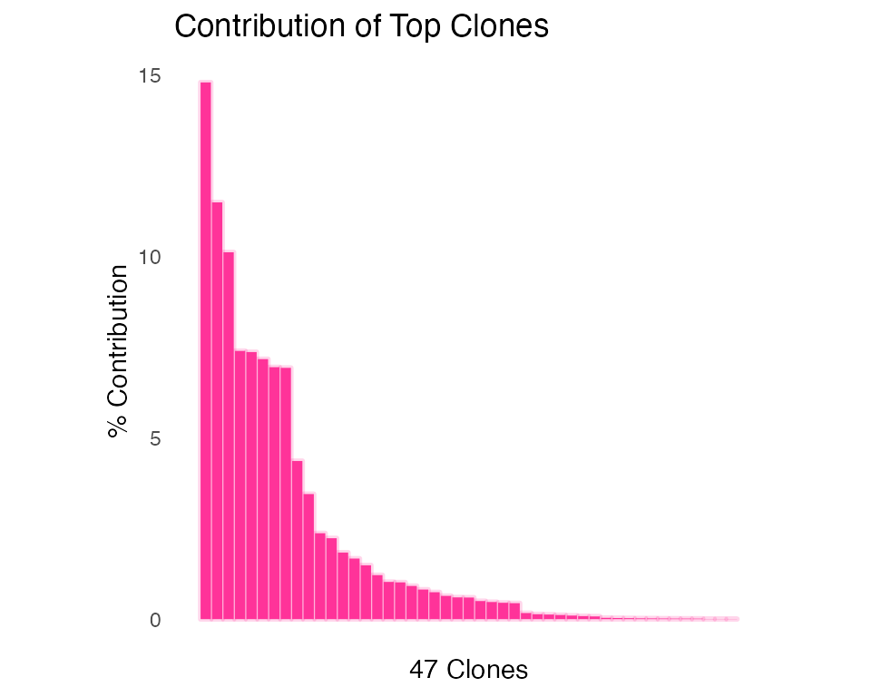

Barbie
LF
2024-02-01
Barbie.RmdLoad Library
library(here)
library(magrittr)
library(knitr)
library(grid)
library(tidyverse)
library(dplyr)
library(plyr)
library(ggplot2)
library(ggbreak)
library(patchwork)
library(plotly)
library(ComplexHeatmap)
library(eulerr)
library(colorRamp2)
library(igraph)
source(here::here("R", "Barbie_object.R")) # create Barbie object
source(here::here("R", "Pair_Correlation.R")) # predict correlating barcodes
source(here::here("R", "Pareto_contribution.R")) # visualize barcode contribution
source(here::here("R", "Sankey_contribution.R"))
source(here::here("R", "Bar_contribution.R"))Read Data
counts <- read.csv(here::here("inst", "extdata", "barcodes_example.csv"), row.names = 1)
# make sure "counts" is a numeric count table with barcodes in rows and samples in columns
targets <- read.table(here::here("inst", "extdata", "targets_example.txt"))
# make sure "targets" is a table saving experiment designs with samples in rows and factors/conditions in columns
colors <- readRDS(here::here("inst", "extdata", "colors_example.RDS"))
# "colors" is a list of color palette you designed for different conditions of samples.Create Barbie Object
example_bb <- createBarbie(counts = counts,
metadata = targets,
color_panel = colors) # no need to pass color_panel if you don't have it.Collapse Correlating Barcodes
REMINDER:
If your barcode count table includes a big amount of barcodes (say over 1000), I recommend to do a filtering before calculating the pairwise correlation of barcodes.
If your barcode count table includes samples such as negative controls or time-0 controls that you wish to exclude from the correlation analysis, please proceed with data trimming.
Predict Correlating Barcodes
# group.vec is meant to pass the "ground truth" of known correlating barcodes from the same clones
plot_bar_pair_cor <- plotBarcodePairCor_Count(count.mx = example_bb$assay, # this is your barcode count table (make sure barcodes in rows)
# group.vec = ADD YOUR OWN GROUP OR LEAVE IT AS NULL, # this is a vector of known barcode groups
plot = "mean") # options for plotting, including "mean", "max", "histogram", and "table"
# plot the pairwise correlation of barcodes
plot_bar_pair_cor 
# if you prefer interactive plot, go for this:
# ggplotly(plot_bar_pair_cor)
# save the results of pairwise correlation
result_bar_pair_cor <- plotBarcodePairCor_Count(count.mx = example_bb$assay,
# group.vec = ADD YOUR OWN GROUP OR LEAVE IT AS NULL,
plot = "table")
# select barcode pairs that are previously undefined, highly correlating, and making big contribution.
req1 <- result_bar_pair_cor$Cor > 0.95 # pair correlation > 0.95
req2 <- result_bar_pair_cor$Mean > 2^14 # pair mean count > 2^14
req3 <- result_bar_pair_cor$group == "undefined barcode pair"
proposed_bar_pair <- result_bar_pair_cor[req1 & req2 & req3,]
kable(head(proposed_bar_pair))| group | barID | cloneID | Cor | Mean | Max | sig. | |
|---|---|---|---|---|---|---|---|
| 342 | undefined barcode pair | VEX_V3_Barcode_416448.Henrietta_56 | 55.4 | 0.9983824 | 20174.03 | 363521 | TRUE |
| 373 | undefined barcode pair | VEX_V3_Barcode_828935.Henrietta_56 | 86.4 | 0.9978821 | 22284.04 | 391296 | TRUE |
| 492 | undefined barcode pair | VEX_V3_Barcode_1081715.Henrietta_87 | 18.6 | 0.9914049 | 24486.45 | 178559 | TRUE |
| 503 | undefined barcode pair | VEX_V3_Barcode_1318807.Henrietta_87 | 29.6 | 0.9902881 | 23413.45 | 183303 | TRUE |
| 530 | undefined barcode pair | VEX_V3_Barcode_420283.Henrietta_87 | 56.6 | 0.9885805 | 25040.05 | 175724 | TRUE |
| 543 | undefined barcode pair | VEX_V3_Barcode_618565.Henrietta_87 | 69.6 | 0.9598661 | 21538.94 | 166979 | TRUE |
proposed_bar_pair_list <- lapply(proposed_bar_pair$barID, function(x) strsplit(x, split = "\\.") %>% unlist())
barcode_clone_ref <- createBarcodeCloneRef(new_pairlist = proposed_bar_pair_list)
# If you have an old barcode-clone reference list, go for this:
# updateBarcodeCloneRef(old_reflist = OLD LIST,
# new_pairlist = proposed_bar_pair_list)Collapse Barcodes by Correlating List
I’ve updated cloneID for each barcodes based on the old reference list and new proposed correlation list, and saved it in “clone_group” in the Barbie object.
example_bb <- readRDS(here::here("inst", "extdata", "example_bb.RDS"))
collapsed_bb <- CollapseRow(Barbie = example_bb,
group_array = example_bb$clone_group)
# re-create new Barbie Object, because CPM needs to be recalculated.
example_bb <- createBarbie(counts = collapsed_bb$assay,
metadata = collapsed_bb$metadata,
color_panel = collapsed_bb$color_panel)Filter Barcodes
# trim rows
flag <- rowSums(example_bb$presence) >= 2
example_bb <- trimRow(Barbie = example_bb,
keep_rows = flag)
# trim unwanted samples
example_bb <- trimObjectByMetadata(Barbie = example_bb,
condition = "time",
specified = c("week4","week8")) # or use function: trimColumn
# YOUR BARBIE <- trimColumn(Barbie = YOUR BARBIE,
# keep_columns = YOUR ARRAY)
# select top contributing barcodes
example_bb <- getTopBar(Barbie = example_bb)
# plot barcode contribution
PlotCircularContribution(Barbie = example_bb)
PlotTotalContribution(Barbie = example_bb)
# trim rows by "is_top"
example_top <- trimRow(Barbie = example_bb,
keep_rows = example_bb$is_top)
# plot top barcode contribution
PlotBarContribution(Barbie = example_top)